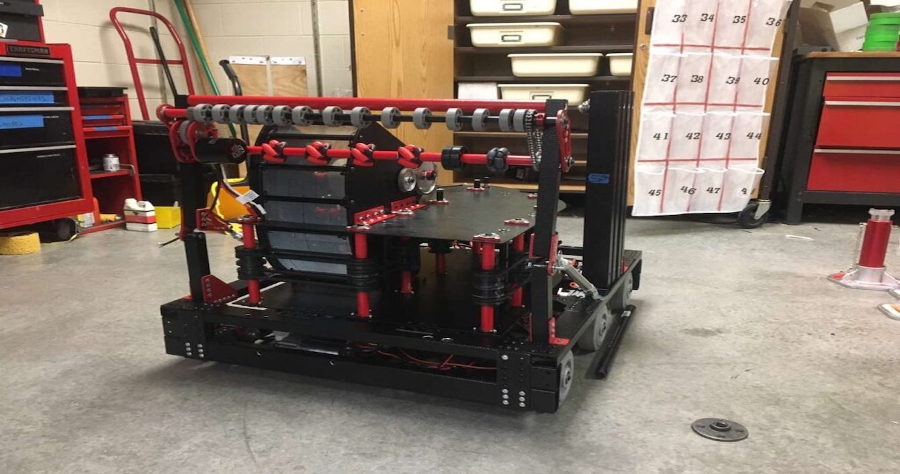

Trick or Treating Simulator

In the midst of the coronavirus Pandemic a group of two freshman and two sophomores participated in their first hackathon, Sunhacks 2020. We decided we wanted to make a project that had some kind of useful aspect to it given the circumstances. As one of our favorite holidays was fast approaching with no safe way to celebrate we decided to make a virtual reality Trick or Treating Simulator.
Date: October 2020
View on Devpost
Awards
Third Place
Best UI/UX
FIRST Robotics Competition

My Freshman year of High School I heard that the school was starting a Robotics team. I had been participating in different robotics programs since I was 8 and had no plans of stopping, so I joined. Becoming the head of Programming and Electrical my Freshman year we went on to win many awards throughout my entire High School career. We made it to the world championship competition and learned so much while doing it. Pictured above is my teams robot from my Senior year when I was President of the team. Unfortunately our competitions were cancelled that year due to the Coronavirus Pandemic.
Date: August 2016 - March 2020
View FirebirdRobotics.com
View Github Repositories
Awards
2017 Rookie All Star (AZ North Competition)
2017 Highest Rookie Seed (AZ West Competition)
2017 Finalist (AZ West Competition)
2017 Entrepreneurship Award (AZ West Competition)
2017 Subdivision Winner (World Championship)
2017 Third Place (World Championship)
2019 Chairman's Award (AZ West)
2019 Entrepreneurship Award (AZ North)
2019 Entrepreneurship Award (AZ West)
2019 Finalist (AZ West)
Tri-Mar Bow Machine - Conceptual Design

I was approached by a local Ribbon distribution Company to work on the conceptual Design for a bow making machine. These Bows are typically produced by hand in other countries so this project was in an effort to lower costs and increase production speed. This project has since been moved to someone with more experience in mechanical engineering but they are using my conceptual design to move forward.
Date: February 2020